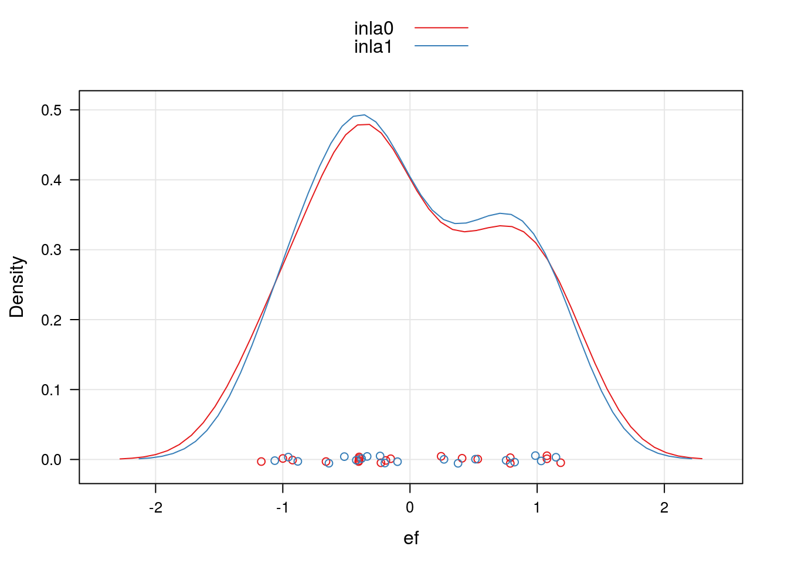
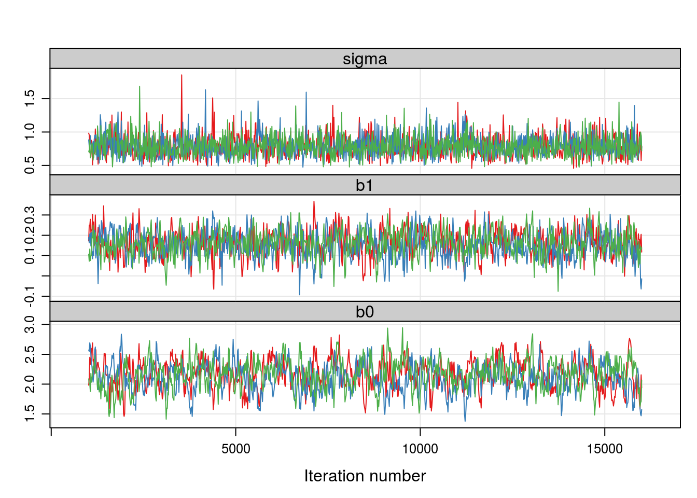

library(cmpreg)## Loading required package: bbmle## Loading required package: stats4data(nematodes)
str(nematodes)## 'data.frame': 94 obs. of 5 variables:
## $ cult: Factor w/ 19 levels "A","B","C","D",..: 1 1 1 1 1 2 2 2 2 2 ...
## $ mfr : num 10.52 11.03 6.42 8.16 4.48 ...
## $ vol : int 40 40 40 40 40 40 40 40 40 40 ...
## $ nema: int 4 5 3 4 3 2 2 2 2 2 ...
## $ off : num 0.263 0.276 0.161 0.204 0.112 ...## help(nematodes, h = "html")##======================================================================
## Análise de dados de nematóides
xyplot(nema ~ off, groups = cult,
type = c("g", "p"),
data = nematodes,
auto.key = list(
title = "Linhagens",
cex.title = 1,
corner = c(0.9, 0.9)
))Duas estruturas para modelagem serão consideradas * Modelar somente o efeito aleatório das linhagens, * Modelar somente o efeito fixo de off e aleatório das linhagens.
jags)##----------------------------------------------------------------------
## Com a Poisson
library(lme4)## Loading required package: Matrixmle0 <- glmer(nema ~ (1|cult), data = nematodes,
family = poisson)
mle1 <- glmer(nema ~ log(off) + (1|cult), data = nematodes,
family = poisson)##-------------------------------------------
## Estimativas dos parametros
## Para o modelo sem efeito fixo
tmle0 <- rbind(sigma = c(sqrt(VarCorr(mle0)$cult), NA, NA),
summary(mle0)$coef[, -4])
rownames(tmle0)[2] <- c("(Intercept)")
tmle0## Estimate Std. Error z value
## sigma 0.759144 NA NA
## (Intercept) 1.760503 0.1808152 9.736474## Para o modelo com efeito fixo
tmle1 <- rbind(sigma = c(sqrt(VarCorr(mle1)$cult), NA, NA),
summary(mle1)$coef[, -4])
tmle1## Estimate Std. Error z value
## sigma 0.7310786 NA NA
## (Intercept) 2.1562623 0.23278215 9.263005
## log(off) 0.1620083 0.06397819 2.532242## Predição dos efeitos aleatórios
ranef.mle0 <- data.frame(ef = ranef(mle0)$cult[, 1], m = "mle0")
ranef.mle1 <- data.frame(ef = ranef(mle1)$cult[, 1], m = "mle1")
ranef.mle <- rbind(ranef.mle0, ranef.mle1)
densityplot(~ef, groups = m,
data = ranef.mle,
axis = axis.grid,
auto.key = TRUE)##----------------------------------------------------------------------
## Com a COM-Poisson
## library(cmpreg)
## cmp0 <- cmp(nema ~ (1|cult), data = nematodes, sumto = 50)
## cmp1 <- cmp(nema ~ log(off) + (1|cult), data = nematodes,
## sumto = 50)
load("mixedcmp_models.rda")## Estimativas dos parametros
## Para o modelo sem efeito fixo
tcmp0 <- rbind(sigma = c(exp(coef(cmp0)[2]), NA, NA),
summary(cmp0)@coef[-2, -4])
colnames(tcmp0) <- colnames(summary(cmp0)@coef[, -4])
tcmp0## Estimate Std. Error z value
## sigma 0.8749274 NA NA
## phi 0.1528742 0.1792980 0.8526264
## (Intercept) 2.0683427 0.4408113 4.6921272## Para o modelo com efeito fixo
tcmp1 <- rbind(sigma = c(exp(coef(cmp1)[2]), NA, NA),
summary(cmp1)@coef[-2, -4])
colnames(tcmp1) <- colnames(summary(cmp1)@coef[, -4])
tcmp1## Estimate Std. Error z value
## sigma 0.9161159 NA NA
## phi 0.2409883 0.17683814 1.362762
## (Intercept) 2.7523952 0.56492336 4.872157
## log(off) 0.1982931 0.07807116 2.539902## Predição dos efeitos aleatórios
ranef.cmp0 <- data.frame(ef = mixedcmp.ranef(cmp0), m = "cmp0")
ranef.cmp1 <- data.frame(ef = mixedcmp.ranef(cmp1), m = "cmp1")
ranef.cmp <- rbind(ranef.cmp0, ranef.cmp1)
densityplot(~ef, groups = m,
data = ranef.cmp,
axis = axis.grid,
auto.key = TRUE)##----------------------------------------------------------------------
## Com a poisson
library(INLA)## Loading required package: sp## Loading required package: splinesinla0 <- inla(nema ~ 1 + f(cult, model = "iid"),
data = nematodes, family = "poisson")
inla1 <- inla(nema ~ log(off) + f(cult, model = "iid"),
data = nematodes, family = "poisson")## Estimativas dos parametros
## Para o modelo sem efeito fixo
tinla0 <- rbind(c(sqrt(1/summary(inla0)$hyperpar[1]), rep(NA, 6)),
summary(inla0)$fixed)
colnames(tinla0) <- colnames(summary(inla0)$fixed)
rownames(tinla0)[1] <- "sigma"
tinla0## mean sd 0.025quant 0.5quant 0.975quant mode kld
## sigma 0.729325 NA NA NA NA NA NA
## (Intercept) 1.7634 0.1793 1.4051 1.7647 2.1139 1.7671 0## Para o modelo com efeito de off
tinla1 <- rbind(c(sqrt(1/summary(inla1)$hyperpar[1]), rep(NA, 6)),
summary(inla1)$fixed)
colnames(tinla1) <- colnames(summary(inla1)$fixed)
rownames(tinla1)[1] <- "sigma"
tinla1## mean sd 0.025quant 0.5quant 0.975quant mode kld
## sigma 0.7018797 NA NA NA NA NA NA
## (Intercept) 2.1629 0.2321 1.7015 2.1646 2.6147 2.1678 0
## log(off) 0.1632 0.0643 0.0374 0.163 0.2898 0.1626 0## Predição para os efeitos aleatórios
ranef.inla0 <- data.frame(ef = inla0$summary.random$cult$mean,
m = "inla0")
ranef.inla1 <- data.frame(ef = inla1$summary.random$cult$mean,
m = "inla1")
ranef.inla <- rbind(ranef.inla0, ranef.inla1)
densityplot(~ef, groups = m,
data = ranef.inla,
axis = axis.grid,
auto.key = TRUE)
##----------------------------------------------------------------------
## Com a Gamma-Count
inlag0 <- inla(nema ~ 1 + f(cult, model = "iid"),
data = nematodes, family = "gammacount")## Warning in inla.model.properties.generic(inla.trim.family(model), (mm[names(mm) == : Model 'gammacount' in section 'likelihood' is marked as 'experimental'; changes may appear at any time.
## Use this model with extra care!!! Further warnings are disabled.inlag1 <- inla(nema ~ log(off) + f(cult, model = "iid"),
data = nematodes, family = "gammacount")## Estimativas dos parametros
## Para o modelo sem efeito fixo
tinlag0 <- rbind(c(sqrt(1/summary(inlag0)$hyperpar[2, 1]), rep(NA, 6)),
c(summary(inlag0)$hyperpar[2, 1], rep(NA, 6)),
summary(inlag0)$fixed)
colnames(tinlag0) <- colnames(summary(inlag0)$fixed)
rownames(tinlag0) <- c("sigma", "alpha", "(Intercept)")
tinlag0## mean sd 0.025quant 0.5quant 0.975quant mode kld
## sigma 0.7262411 NA NA NA NA NA NA
## alpha 1.8960000 NA NA NA NA NA NA
## (Intercept) 1.7718000 0.1803 1.4084 1.7737 2.1239 1.7774 0## Para o modelo com efeito de off
tinlag1 <- rbind(c(sqrt(1/summary(inlag1)$hyperpar[2, 1]), rep(NA, 6)),
c(summary(inlag1)$hyperpar[2, 1], rep(NA, 6)),
summary(inlag1)$fixed)
colnames(tinlag1) <- colnames(summary(inlag1)$fixed)
rownames(tinlag1) <- c("sigma", "alpha", "(Intercept)", "log(off)")
tinlag1## mean sd 0.025quant 0.5quant 0.975quant mode kld
## sigma 0.6989248 NA NA NA NA NA NA
## alpha 2.0471000 NA NA NA NA NA NA
## (Intercept) 2.1668000 0.2251 1.7161 2.1691 2.6041 2.1735 0
## log(off) 0.1598000 0.0598 0.0433 0.1593 0.2785 0.1585 0## Predição para os efeitos aleatórios
ranef.inlag0 <- data.frame(ef = inlag0$summary.random$cult$mean,
m = "inlag0")
ranef.inlag1 <- data.frame(ef = inlag1$summary.random$cult$mean,
m = "inlag1")
ranef.inlag <- rbind(ranef.inlag0, ranef.inlag1)
densityplot(~ef, groups = m,
data = ranef.inlag,
axis = axis.grid,
auto.key = TRUE)Funções para facilitar a análise das amostras da simulação.
##======================================================================
## Por amostragem MCMC
library(rjags)## Linked to JAGS 4.2.0## Loaded modules: basemod,bugsselect_pars <- function(sample, pars) {
if (!is.mcmc.list(sample)) {
sample <- as.mcmc.list(sample)
}
out <- lapply(sample, function(x) {
sel <- gsub("\\[[0-9]+\\]", repl = "", colnames(x))
x[, sel %in% pars]
})
return(as.mcmc(out))
}Abaixo define-se o modelo conforme sintaxe do JAGS
##-------------------------------------------
## Com a Poisson (Modelo sem efeito de covariavel)
poisRE0 <-
" model {
## Log-verossimilhanca
for (i in 1:m) {
u[i] ~ dnorm(0, tau.e)
}
for (j in 1:n) {
log(mu[j]) <- b0 + u[ind[j]]
y[j] ~ dpois(mu[j])
}
## Prioris
b0 ~ dnorm(0, 0.0001)
tau.e ~ dgamma(0.001, 0.001)
sigma <- sqrt(1/tau.e)
}
"##-------------------------------------------
## Modelo sem efeito de covariavel
data0 <- with(
nematodes,
list("y" = nema,
"n" = length(nema),
"m" = length(unique(cult)),
"ind" = as.numeric(cult))
)
jagsmodel0 <- jags.model(
textConnection(poisRE0),
data = data0,
n.chains = 3,
n.adapt = 1000
)
amostra0 <- coda.samples(
jagsmodel0, c("b0", "sigma", "u", "mu"),
n.iter = 10000, thin = 10,
n.chains = 3,
n.adapt = 1000)Avaliação das cadeias
## Seleciona apenas os parâmetros amostrados do modelo
ampars0 <- select_pars(amostra0, pars = c("b0", "sigma"))
## Gráficos de diagnóstico
xyplot(ampars0, axis = axis.grid, aspect = "fill")densityplot(ampars0, axis = axis.grid, aspect = "fill")acfplot(ampars0, type = "h", axis = axis.grid, aspect = "fill")Resumos da posteriori
##-------------------------------------------
## Resumos da posteriori (para os parametros b0 e sigma)
ampars0 <- as.mcmc(do.call(rbind, ampars0))
(resumo0 <- summary(ampars0)$statistics)## Mean SD Naive SE Time-series SE
## b0 1.7429911 0.1888004 0.003447007 0.010060598
## sigma 0.8183629 0.1556370 0.002841529 0.002932447HPDinterval(ampars0)## lower upper
## b0 1.3621824 2.112360
## sigma 0.5282123 1.113475
## attr(,"Probability")
## [1] 0.95Predição dos efeitos aleatórios
amranef0 <- select_pars(amostra0, pars = "u")
amranef0 <- as.mcmc(do.call(rbind, amranef0))
ranef.jags0 <- data.frame(
ef = summary(amranef0)$statistics[, 1],
m = "jags0")
qqmath(~ef, data = ranef.inlag0,
axis = axis.grid,
panel = function(...) {
panel.qqmath(...)
panel.qqmathline(..., lty = 2, col = "gray50")
})Define o modelo com o efeito de covariável
##-------------------------------------------
## Com a Poisson (modelo com covariável)
poisRE1 <-
" model {
## Log-verossimilhanca
for (i in 1:m) {
u[i] ~ dnorm(0, tau.e)
}
for (j in 1:n) {
log(mu[j]) <- b0 + b1 * cov[j] + u[ind[j]]
y[j] ~ dpois(mu[j])
}
## Prioris
b0 ~ dnorm(0, 0.0001)
b1 ~ dnorm(0, 0.0001)
tau.e ~ dgamma(0.001, 0.001)
sigma <- sqrt(1/tau.e)
}
"##-------------------------------------------
## Modelo com efeito de covariavel
data1 <- with(
nematodes,
list("y" = nema,
"cov" = log(off),
"n" = length(nema),
"m" = length(unique(cult)),
"ind" = as.numeric(cult))
)
jagsmodel1 <- jags.model(
textConnection(poisRE1),
data = data1,
n.chains = 3,
n.adapt = 1000
)
amostra1 <- coda.samples(
jagsmodel1, c("b0", "b1", "sigma", "u", "mu"),
n.iter = 15000, thin = 15,
n.chains = 3,
n.adapt = 1000)Avaliação da cadeia
##-------------------------------------------
## Avaliação das cadeias
ampars1 <- select_pars(amostra1, pars = c("b0", "b1", "sigma"))
xyplot(ampars1, axis = axis.grid, aspect = "fill")
densityplot(ampars1, axis = axis.grid, aspect = "fill")acfplot(ampars1, type = "h", axis = axis.grid, aspect = "fill")Resumos da posteriori
## Resumos da posteriori (para os parametros b0, b1 e sigma)
ampars1 <- as.mcmc(do.call(rbind, ampars1))
(resumo1 <- summary(ampars1)$statistics)## Mean SD Naive SE Time-series SE
## b0 2.1445086 0.23854378 0.004355194 0.01121614
## b1 0.1586287 0.06292222 0.001148797 0.00204875
## sigma 0.7884180 0.15568930 0.002842485 0.00309550HPDinterval(ampars1)## lower upper
## b0 1.65203156 2.6032257
## b1 0.03478347 0.2826243
## sigma 0.51363772 1.0971334
## attr(,"Probability")
## [1] 0.95Predição dos efeitos aleatórios
##-------------------------------------------
## Predição dos efeitos aleatórios
amranef1 <- select_pars(amostra1, pars = "u")
amranef1 <- as.mcmc(do.call(rbind, amranef1))
ranef.jags1 <- data.frame(
ef = summary(amranef1)$statistics[, 1],
m = "jags1")
qqmath(~ef, data = ranef.inlag1,
axis = axis.grid,
panel = function(...) {
panel.qqmath(...)
panel.qqmathline(..., lty = 2, col = "gray50")
})Comparando os efeitos aleatórios
##-------------------------------------------
## Empilhando os efeitos aleatórios
ranef.jags <- rbind(ranef.jags0, ranef.jags1)
densityplot(~ef, groups = m,
data = ranef.jags,
axis = axis.grid,
auto.key = TRUE)tmle0## Estimate Std. Error z value
## sigma 0.759144 NA NA
## (Intercept) 1.760503 0.1808152 9.736474tcmp0## Estimate Std. Error z value
## sigma 0.8749274 NA NA
## phi 0.1528742 0.1792980 0.8526264
## (Intercept) 2.0683427 0.4408113 4.6921272tinla0## mean sd 0.025quant 0.5quant 0.975quant mode kld
## sigma 0.729325 NA NA NA NA NA NA
## (Intercept) 1.7634 0.1793 1.4051 1.7647 2.1139 1.7671 0tinlag0## mean sd 0.025quant 0.5quant 0.975quant mode kld
## sigma 0.7262411 NA NA NA NA NA NA
## alpha 1.8960000 NA NA NA NA NA NA
## (Intercept) 1.7718000 0.1803 1.4084 1.7737 2.1239 1.7774 0resumo0## Mean SD Naive SE Time-series SE
## b0 1.7429911 0.1888004 0.003447007 0.010060598
## sigma 0.8183629 0.1556370 0.002841529 0.002932447tmle1## Estimate Std. Error z value
## sigma 0.7310786 NA NA
## (Intercept) 2.1562623 0.23278215 9.263005
## log(off) 0.1620083 0.06397819 2.532242tcmp1## Estimate Std. Error z value
## sigma 0.9161159 NA NA
## phi 0.2409883 0.17683814 1.362762
## (Intercept) 2.7523952 0.56492336 4.872157
## log(off) 0.1982931 0.07807116 2.539902tinla1## mean sd 0.025quant 0.5quant 0.975quant mode kld
## sigma 0.7018797 NA NA NA NA NA NA
## (Intercept) 2.1629 0.2321 1.7015 2.1646 2.6147 2.1678 0
## log(off) 0.1632 0.0643 0.0374 0.163 0.2898 0.1626 0tinlag1## mean sd 0.025quant 0.5quant 0.975quant mode kld
## sigma 0.6989248 NA NA NA NA NA NA
## alpha 2.0471000 NA NA NA NA NA NA
## (Intercept) 2.1668000 0.2251 1.7161 2.1691 2.6041 2.1735 0
## log(off) 0.1598000 0.0598 0.0433 0.1593 0.2785 0.1585 0resumo1## Mean SD Naive SE Time-series SE
## b0 2.1445086 0.23854378 0.004355194 0.01121614
## b1 0.1586287 0.06292222 0.001148797 0.00204875
## sigma 0.7884180 0.15568930 0.002842485 0.00309550